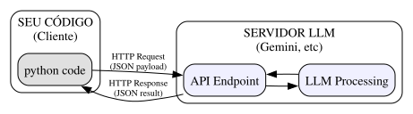

Por que Python?
Python é a linguagem mais usada em IA por três motivos:
- Sintaxe simples → parece pseudocódigo
- Bibliotecas → milhões de pacotes prontos
- Comunidade → documentação e tutoriais em todo lugar
Mas mais importante: o ecossistema de IA vive em Python. Google Gemini, HuggingFace, Anthropic, Meta - todos lançam suas APIs primeiro em Python.
Fundamentos Teóricos
O que é uma API?
Definição formal: API (Application Programming Interface) é um conjunto de definições e protocolos que permite a comunicação entre sistemas de software, especificando os métodos e formatos de dados que podem ser usados para solicitar e trocar informações.
No contexto de LLMs: Uma API de LLM é uma interface HTTP que permite enviar prompts (requests) para um modelo hospedado remotamente e receber respostas (responses), sem precisar rodar o modelo localmente.
Arquitetura Cliente-Servidor

Conceitos Fundamentais
- Request (Requisição): Mensagem enviada do cliente para o servidor. Contém: endpoint URL, método (POST/GET), headers, body
- Response (Resposta): Mensagem retornada pelo servidor. Contém: status code, headers, body (dados)
- Endpoint: URL específica que recebe requisições (ex:
https://generativelanguage.googleapis.com/v1beta/models/gemini-2.0-flash:generateContent) - Autenticação: Verificação de identidade via API Key (token secreto)
- Rate Limiting: Limite de requisições por período (para evitar abuso)
O Mínimo que Você Precisa Saber de Python
Variáveis
# Tipos básicos nome = "Maria" # texto (string) idade = 25 # número inteiro (int) altura = 1.70 # número decimal (float) estudante = True # verdadeiro/falso (bool) # F-strings (formatação moderna) mensagem = f"{nome} tem {idade} anos" print(mensagem) # "Maria tem 25 anos"
Listas e Dicionários
# Lista: sequência ordenada frutas = ["maçã", "banana", "laranja"] frutas.append("uva") # adiciona no final frutas[0] # "maçã" (primeiro elemento) frutas[-1] # "uva" (último elemento) len(frutas) # 4 (tamanho) # Dicionário: pares chave-valor pessoa = { "nome": "João", "idade": 30, "cidade": "São Paulo" } pessoa["nome"] # "João" pessoa["idade"] = 31 # atualiza valor pessoa["profissao"] = "Dev" # adiciona nova chave
Funções
# Definição básica def saudar(nome): return f"Olá, {nome}!" # Chamada resultado = saudar("João") # "Olá, João!" # Com valor padrão def saudar(nome, saudacao="Olá"): return f"{saudacao}, {nome}!" saudar("Maria") # "Olá, Maria!" saudar("Maria", "Oi") # "Oi, Maria!" # Com retorno múltiplo def processar(texto): return len(texto), texto.upper() tamanho, maiusculo = processar("hello") # (5, "HELLO")
Tratamento de Exceções
# Try-except básico try: resultado = 10 / 0 except ZeroDivisionError: resultado = None print("Erro: divisão por zero") # Com múltiplos erros try: arquivo = open("nao_existe.txt") except FileNotFoundError: print("Arquivo não encontrado") except PermissionError: print("Sem permissão") except Exception as e: print(f"Erro inesperado: {e}") finally: print("Sempre executa")
APIs de LLM: Opções Gratuitas
Visão Geral
| Provedor | Gratuito? | Limite | Onde roda | |
| ---------- |
||||
| Google Gemini | ✅ Sim | 1M tokens/dia | Cloud (Colab) | |
| HuggingFace | ✅ Sim | Rate limit | Cloud (Colab) | |
| OpenRouter | ✅ Sim* | Crédito inicial | Cloud (Colab) | |
| Ollama | ✅ Sim | Ilimitado | Local (GPU) | |
| LM Studio | ✅ Sim | Ilimitado | Local (GUI) | |
| OpenAI | ❌ Pago | Por uso | Cloud |
Para o curso: use Gemini ou HuggingFace no Colab!
Opção 1: Google Gemini (Recomendado)
Por que Gemini?
- 1 milhão de tokens/dia gratuito
- Funciona direto no Google Colab
- Modelos rápidos e capazes
- API key gratuita
Como obter API key
- Acesse: https://aistudio.google.com
- Faça login com sua conta Google
- Clique em "Get API Key" no menu lateral
- Clique em "Create API Key"
- Escolha um projeto (ou crie um novo)
- Copie a chave e guarde bem!
⚠️ API key é SECRETA. Nunca compartilhe ou publique no GitHub!
Modelos disponíveis
| Modelo | Contexto | Uso | Gratuito? |
|---|---|---|---|
| gemini-2.5-flash-preview | 1M tokens | Rápido, custo-benefício | Sim (limitado) |
| gemini-2.0-flash | 1M tokens | Equilibrado, recomendado | Sim (limitado) |
| gemini-2.0-flash-lite | 1M tokens | Mais rápido, menor | Sim (limitado) |
| gemini-1.5-pro | 2M tokens | Complexo, contexto longo | Sim (limitado) |
| gemini-1.5-flash | 1M tokens | Rápido, multimodal | Sim (limitado) |
Limite gratuito: ~1 milhão de tokens/dia para muitos modelos. Verifique em ai.google.dev/pricing
Como escolher o modelo
- gemini-2.0-flash: Recomendado para maioria dos casos
- gemini-2.5-flash-preview: Mais recente, mais inteligente
- gemini-1.5-pro: Para contexto muito longo (documentos grandes)
Configuração no Colab
# Instalar SDK !pip install google-genai from google import genai from google.genai import types import os # Configurar API key (novo SDK: usar Client) from google.colab import userdata client = genai.Client(api_key=userdata.get('GEMINI_API_KEY'))
Chamada básica
# Mensagem simples (novo SDK) response = client.models.generate_content( model="gemini-2.0-flash", contents="Olá! Qual é a capital do Brasil?" ) print(response.text) # Com histórico de conversa (chat) chat = client.chats.create(model="gemini-2.0-flash") response1 = chat.send_message("Olá!") print(response1.text) response2 = chat.send_message("Qual é a capital do Brasil?") print(response2.text)
Estrutura da mensagem completa
# Com instruções de sistema (novo SDK) response = client.models.generate_content( model="gemini-2.0-flash", contents="O que é uma lista?", config=types.GenerateContentConfig( system_instruction="Você é um tutor de Python. Responda de forma didática." ) ) print(response.text)
Parâmetros importantes
# Novo SDK: usar types.GenerateContentConfig response = client.models.generate_content( model="gemini-2.0-flash", contents="Conte uma piada", config=types.GenerateContentConfig( temperature=0.7, # 0.0 (determinístico) a 2.0 (criativo) max_output_tokens=100, # Limite de tokens na resposta top_p=0.95, # Nucleus sampling top_k=40 # Top-k sampling ) ) print(response.text)
Tratamento de erros
from google.api_core.exceptions import NotFound, PermissionDenied, ResourceExhausted try: response = client.models.generate_content( model="gemini-2.0-flash", contents="Olá!" ) print(response.text) except PermissionDenied: print("❌ API key inválida ou sem permissão") except ResourceExhausted: print("⚠️ Limite de tokens excedido. Aguarde.") except NotFound: print("❌ Modelo não encontrado") except Exception as e: print(f"Erro: {e}")
Exemplo completo no Colab
# Instalar SDK !pip install google-genai from google import genai from google.genai import types from google.colab import userdata # Configurar (novo SDK) client = genai.Client(api_key=userdata.get('GEMINI_API_KEY')) # Criar chat chat = client.chats.create(model="gemini-2.0-flash") while True: pergunta = input("Você: ") if pergunta.lower() in ['sair', 'exit', 'quit']: break resposta = chat.send_message(pergunta) print(f"IA: {resposta.text}\n")
Opção 2: HuggingFace
Por que HuggingFace?
- Gratuito com rate limit
- Vários modelos disponíveis
- Comunidade ativa
- Alternativa ao Gemini
Como obter token
- Acesse: https://huggingface.co
- Crie uma conta gratuita
- Vá em Settings → Access Tokens
- Clique em "New token"
- Escolha "Read" como permissão
- Copie o token!
Configuração no Colab
# Instalar !pip install huggingface_hub from huggingface_hub import InferenceClient from google.colab import userdata # Configurar cliente client = InferenceClient( model="Qwen/Qwen2.5-7B-Instruct", token=userdata.get('HF_TOKEN') )
Exemplo de uso
# Texto simples response = client.text_generation( "Olá! Como você está?", max_new_tokens=100 ) print(response) # Com chat messages = [ {"role": "system", "content": "Você é um assistente útil."}, {"role": "user", "content": "Qual é a capital do Brasil?"} ] response = client.chat_completion(messages=messages) print(response.choices[0].message.content)
Modelos recomendados
| Modelo | Tamanho | Uso | |
|---|---|---|---|
| Qwen/Qwen3.5-27B | 27B | Chat geral (recomendado) | |
| Qwen/Qwen2.5-7B-Instruct | 7B | Mais rápido | |
| meta-llama/Llama-3.2-3B-Instruct | 3B | Mais leve |
Opção 3: OpenRouter
O que é OpenRouter?
OpenRouter é um agregador de modelos que permite acessar múltiplos provedores através de uma única API.
Vantagem: Modelos gratuitos com crédito inicial, sem precisar de GPU!
Por que usar OpenRouter?
- Modelos gratuitos disponíveis (com sufixo
:free) - Crédito inicial gratuito para novos usuários
- Múltiplos provedores em um só lugar
- Integração fácil com LangChain
- Alternativa ao Gemini quando atingir limite
Como obter API key
- Acesse: https://openrouter.ai
- Crie uma conta (pode usar Google/GitHub)
- Vá em Settings → Keys
- Clique em \"Create Key\"
- Copie a chave!
⚠️ Configure como variável de ambiente:
OPENROUTER_API_KEY
Configuração no Colab
# Instalar !pip install langchain-openrouter from langchain_openrouter import ChatOpenRouter from google.colab import userdata import os # Configurar API key os.environ["OPENROUTER_API_KEY"] = userdata.get('OPENROUTER_API_KEY')
Exemplo de uso com Qwen 3.6 Plus
from langchain_openrouter import ChatOpenRouter # Modelo gratuito llm = ChatOpenRouter( model="qwen/qwen3.6-plus:free", temperature=0.8, ) # Chamada simples response = llm.invoke("Olá! Qual é a capital do Brasil?") print(response.content)
Modelos gratuitos disponíveis
| Modelo | Provedor | Uso | |
| -------- |
|||
| qwen/qwen3.6-plus:free | Qwen | Chat geral, recomendado | |
| meta-llama/llama-3.2-3b-instruct:free | Meta | Rápido, leve | |
| deepseek/deepseek-r1:free | DeepSeek | Raciocínio |
Importante: Modelos
:freetêm limites diários. Verifique em openrouter.ai/collections/free-models
Links úteis
- Modelos gratuitos: https://openrouter.ai/collections/free-models
- Documentação LangChain: https://docs.langchain.com/oss/python/integrations/chat/openrouter
- Guia OpenRouter: https://openrouter.ai/docs/guides/community/langchain
Opção 4: LangChain
O que é LangChain?
LangChain é um framework para construir aplicações com LLMs. Ele abstrai diferenças entre provedores.
Vantagem: Mesmo código funciona com Gemini, HuggingFace, OpenRouter ou Ollama!
Com Gemini
# Instalar !pip install langchain-google-genai from langchain_google_genai import ChatGoogleGenerativeAI from google.colab import userdata import os os.environ["GOOGLE_API_KEY"] = userdata.get('GEMINI_API_KEY') llm = ChatGoogleGenerativeAI(model="gemini-2.5-flash-preview") resposta = llm.invoke("Olá!") print(resposta.content)
Com HuggingFace
# Instalar !pip install langchain-huggingface from langchain_huggingface import ChatHuggingFace, HuggingFaceEndpoint from google.colab import userdata endpoint = HuggingFaceEndpoint( repo_id="Qwen/Qwen3.5-27B", huggingfacehub_api_token=userdata.get("HF_TOKEN") ) llm = ChatHuggingFace(llm=endpoint) resposta = llm.invoke("Olá! Qual é a capital do Brasil?") print(resposta.content)
Com Ollama (local)
# Instalar !pip install langchain-ollama from langchain_ollama import OllamaLLM # Primeiro baixe o modelo: ollama pull qwen3.5:4b llm = OllamaLLM(model="qwen3.5:4b") resposta = llm.invoke("Olá!") print(resposta)
Vantagens do LangChain
- Trocar de provedor sem mudar código
- Acesso a modelos diferentes
- Mesma interface para todos
Dica: Comece com Gemini (gratuito), depois mude para Ollama (local) se precisar.
Para Aventureiros: Rodando Local
Quando rodar localmente?**
- Você tem GPU em casa (NVIDIA)
- Quer privacidade total
- Não depende de internet
- Quer modelos sem censura
Opções disponíveis**
| Opção | Interface | Dificuldade |
|---|---|---|
| LM Studio | Gráfica (GUI) | Fácil |
| Ollama | Terminal | Média |
| llama.cpp | Terminal (C++) | Avançada |
LM Studio (recomendado para iniciantes)**
- Baixe em: https://lmstudio.ai
- Instale e abra o programa
- Busque um modelo (ex: Qwen2.5-7B)
- Vá em "Local Server" → "Start Server"
- Use a API em
localhost:1234
Ollama (terminal)**
# Baixar modelo ollama pull qwen3.5:4b # Rodar ollama run qwen3.5:4b
Instalação: Baixe em ollama.com (Windows, Mac, Linux)
Configurar projeto local com uv**
# Instalar uv pip install uv # Criar projeto uv init meu-agente cd meu-agente # Adicionar dependências uv add langchain-ollama # Criar ambiente virtual uv venv source .venv/bin/activate # Linux/Mac # ou: .venv\Scripts\activate # Windows
Usar Ollama com LangChain**
# primeiro: ollama pull qwen3.5:4b from langchain_ollama import OllamaLLM model = OllamaLLM(model="qwen3.5:4b") resposta = model.invoke("Olá! Como você está?") print(resposta)
Usar LM Studio (OpenAI-compatible)**
Vantagem: Interface gráfica fácil + API compatível com OpenAI!
LM Studio roda modelos locais e expõe uma API compatível com OpenAI. Isso significa que você pode usar langchain-openai para conectar:
# Instalar dependência uv add langchain-openai
from langchain_openai import ChatOpenAI # Conectar ao LM Studio (roda em localhost:1234) llm = ChatOpenAI( openai_api_base="http://127.0.0.1:1234/v1", openai_api_key="not-needed", # LM Studio não precisa de key model_name="nvidia/nemotron-3-nano-4b", ) resposta = llm.invoke("Qual é a capital do Brasil?") print(resposta.content)
Dica: No LM Studio, vá em Local Server → Start Server antes de rodar o código. Escolha o modelo desejado na interface.
Modelos recomendados para LM Studio**
| Modelo | Tamanho | Uso |
|---|---|---|
| Qwen2.5-7B-Instruct | 7B | Chat geral |
| nvidia/nemotron-3-nano-4b | 4B | Rápido, leve |
| llama-3.2-3b-instruct | 3B | Mais leve ainda |
Estrutura de projeto com uv**
Para projetos locais, use uv para gerenciar dependências:
# Criar projeto mkdir guilda && cd guilda uv init uv venv # Ativar ambiente virtual source .venv/bin/activate # Linux/Mac # ou: .venv\Scripts\activate # Windows # Instalar dependências uv pip install langchain-openai # Para LM Studio (OpenAI-compatible) uv pip install langchain-ollama # Para Ollama uv pip install langchain-community llama-cpp-python # Para llama.cpp
Por que uv? Mais rápido que pip, resolve dependências melhor, cria ambientes virtuais automaticamente.
Comparação: Local vs Cloud**
| Aspecto | Local (LM Studio/Ollama) | Cloud (Gemini/HuggingFace) | |
| ---------- |
|||
| Custo | Grátis (precisa de GPU) | Grátis com limites | |
| Privacidade | Total | Dados vão para o servidor | |
| Velocidade | Depende da GPU | Rápido (servidor deles) | |
| Modelos | Você escolhe | Disponíveis no provedor | |
| Offline | ✅ Sim | ❌ Não |
Parâmetros de Geração
| Valor | Comportamento | Uso |
|---|---|---|
| 0.0-0.3 | Muito determinístico | Código, fatos, análises |
| 0.4-0.7 | Equilibrado | Conversa geral |
| 0.8-1.0 | Criativo | Escrita criativa, brainstorming |
| 1.0+ | Muito criativo | Arte, experimentação |
Streaming de Respostas
Por que Streaming?
Sem streaming: Você espera a resposta completa antes de ver qualquer coisa.
- Bom para: processamento batch, respostas curtas
- Ruim para: respostas longas, experiência de usuário
Com streaming: Você recebe pedaços da resposta conforme são gerados.
- Bom para: respostas longas, UX interativa
- Ruim para: quando precisa da resposta completa antes de processar
Implementação com OpenAI
# Com streaming stream = client.chat.completions.create( model="gpt-4o-mini", messages=[{"role": "user", "content": "Conte uma história longa"}], stream=True # Ativa streaming ) # Processa chunks conforme chegam for chunk in stream: if chunk.choices[0].delta.content is not None: print(chunk.choices[0].delta.content, end="", flush=True)
APIs de LLM: Ollama (Local)
O que é Ollama?
Definição: Ollama é uma ferramenta para rodar LLMs localmente, sem necessidade de API externa ou conexão com a internet.
Vantagens:
- Gratuito (sem custos de API)
- Privacidade (dados não saem da sua máquina)
- Latência (sem latência de rede)
- Offline (funciona sem internet)
Desvantagens:
- Requer hardware potente (GPU recomendada)
- Modelos menores que os da OpenAI
- Não tem conhecimento atualizado
Instalação
# Linux/macOS curl -fsSL https://ollama.com/install.sh | sh # Baixar modelo ollama pull llama3.2 # Rodar interativamente ollama run llama3.2
Usando via Python
# Instalação # pip install ollama import ollama # Chamada simples response = ollama.chat(model='llama3.2', messages=[ {'role': 'user', 'content': 'Por que o céu é azul?'} ]) print(response['message']['content'])
Modelos Disponíveis
| Modelo | Tamanho | Uso Recomendado |
|---|---|---|
| llama3.2 | 3B | Uso geral, rápido |
| llama3.2:1b | 1B | Muito rápido, básico |
| mistral | 7B | Bom equilíbrio |
| codellama | 7B | Código |
| phi3 | 3.8B | Eficiente, pequeno |
Tratamento de Erros
Tipos de Erros
from openai import OpenAI, APIError, APIConnectionError, RateLimitError, AuthenticationError client = OpenAI() try: response = client.chat.completions.create( model="gpt-4o-mini", messages=[{"role": "user", "content": "Olá"}] ) except AuthenticationError: print("Erro: API Key inválida ou não configurada") except RateLimitError as e: print(f"Erro: Limite de requisições excedido. Aguarde {e.retry_after} segundos") except APIConnectionError: print("Erro: Não foi possível conectar ao servidor da OpenAI") except APIError as e: print(f"Erro da API: {e.message}") print(f"Status code: {e.status_code}") except Exception as e: print(f"Erro inesperado: {e}")
Retry com Exponential Backoff
import time import random from openai import RateLimitError, APIConnectionError def completar_com_retry(mensagens, max_tentativas=5, espera_inicial=1): """ Faz chamada à API com retry automático. Args: mensagens: Lista de mensagens max_tentativas: Número máximo de tentativas espera_inicial: Tempo inicial de espera (segundos) Returns: Resposta da API ou None se falhar """ cliente = OpenAI() espera = espera_inicial for tentativa in range(max_tentativas): try: return cliente.chat.completions.create( model="gpt-4o-mini", messages=mensagens ) except RateLimitError as e: if tentativa == max_tentativas - 1: raise print(f"Rate limit. Tentativa {tentativa + 1}. Esperando {espera}s...") time.sleep(espera) espera *= 2 # Exponential backoff except APIConnectionError as e: if tentativa == max_tentativas - 1: raise print(f"Erro de conexão. Tentativa {tentativa + 1}") time.sleep(espera) espera *= 2 return None
Exercícios Práticos
Exercício 1: Cliente Básico
Crie uma função que faz uma pergunta para a API e retorna a resposta:
def perguntar(pergunta: str, sistema: str = "Você é um assistente útil.") -> str: """Faz uma pergunta à API e retorna a resposta.""" # Implemente aqui pass
📝 Gabarito
from openai import OpenAI client = OpenAI() def perguntar(pergunta: str, sistema: str = "Você é um assistente útil.") -> str: """Faz uma pergunta à API e retorna a resposta.""" response = client.chat.completions.create( model="gpt-4o-mini", messages=[ {"role": "system", "content": sistema}, {"role": "user", "content": pergunta} ] ) return response.choices[0].message.content # Uso resposta = perguntar("Qual a capital da França?") print(resposta) # "A capital da França é Paris."
Exercício 2: Chat com Memória
Crie funções que mantêm o histórico de conversas usando um dicionário:
# Dicionário para guardar o histórico historico = {"mensagens": []} def iniciar_chat(sistema: str = "Você é um assistente útil."): """Inicia o chat com system prompt.""" historico["mensagens"] = [{"role": "system", "content": sistema}] def conversar(mensagem: str) -> str: """Envia mensagem e retorna resposta.""" # Implemente pass def limpar_historico(): """Limpa o histórico mantendo o system prompt.""" # Implemente pass
📝 Gabarito
from openai import OpenAI from typing import List, Dict # Estado global do chat _estado = {"mensagens": [], "client": None} def iniciar_chat(sistema: str = "Você é um assistente útil."): """Inicia o chat com system prompt.""" _estado["client"] = OpenAI() _estado["mensagens"] = [{"role": "system", "content": sistema}] def conversar(mensagem: str) -> str: """Envia mensagem e retorna resposta mantendo histórico.""" # Adiciona mensagem do usuário _estado["mensagens"].append({"role": "user", "content": mensagem}) # Chama a API response = _estado["client"].chat.completions.create( model="gpt-4o-mini", messages=_estado["mensagens"] ) # Extrai resposta resposta = response.choices[0].message.content # Adiciona ao histórico _estado["mensagens"].append({"role": "assistant", "content": resposta}) return resposta def limpar_historico(): """Limpa histórico mantendo system prompt.""" sistema = _estado["mensagens"][0] _estado["mensagens"] = [sistema] def ver_historico() -> List[Dict[str, str]]: """Retorna histórico sem o system prompt.""" return _estado["mensagens"][1:] # Uso iniciar_chat("Você é um tutor de Python.") print(conversar("O que é uma lista?")) print(conversar("E como adiciono elementos?")) # Lembra da conversa anterior print(ver_historico()) # Mostra o histórico